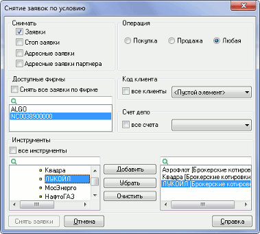

Снятие заявок по условию
меню Сервисы / Снятие заявок по условию...
Назначение
Функция позволяет отозвать группу активных заявок, удовлетворяющих заданному
условию.
Доступ к функции осуществляется из пункта меню Сервисы / Снятие
заявок по условию... либо нажатием клавиш «Shift»+«Alt»+«D».
- Снятие заявок по условию (всех заявок, всех на покупку, всех на продажу по
данному инструменту) может быть выполнено из Таблицы
котировок, нажатием на кнопки на специальной панели инструментов.
Выполнение

- «Снимать» – выбор типа снимаемых заявок:
- «Заявки» – активные заявки в торговой системе биржи,
- «Стоп-заявки» – активные стоп-заявки на сервере QUIK,
- «Адресные заявки» – активные адресные заявки (для режимов РПС и РЕПО) в
торговой системе биржи.
- «Адресные заявки партнера» – активные адресные заявки партнера, выставленные на выбранную фирму, в торговой системе биржи.
- Снятие по условию для безадресных заявок РПС и РЕПО не предусмотрено.
- «Операция» – выбор направления операции, указанного в отзываемых заявках.
- «Доступные фирмы» – список для выбора кода фирмы (участника торгов). Как
правило, разным рынкам соответствуют разные коды участников торгов. Чтобы
снять заявки по какому-то классу, нужно выбрать тот код фирмы, при котором
требуемый класс отображается в списке инструментов.
- «Снять все заявки по фирме» – при установленном флажке отзываются все
неисполненные заявки по указанному коду фирмы.
- «Код клиента» – список кодов клиента, указанных пользователем в активных
заявках. Если пользователю доступен только один код клиента, поле заполняется
автоматически, если доступно несколько, то потребуется выбрать один из списка.
Значение <Пустой элемент> заявкам, введенным без указания кода клиента.
- «все клиенты» – при установленном флажке заявки снимаются независимо от
указанного в них кода клиента.
- «Счет депо» – список счетов депо, доступных пользователю для совершения
операций при выбранном коде фирмы. Чтобы снять заявку по определенному счету,
выберите его из списка.
- «все счета» – при установленном флажке заявки снимаются независимо от
указанного в них счета депо.
- «Инструменты» – список инструментов, доступных для операций с выбранным
кодом фирмы (см. п.1). Для снятия заявки по конкретному инструменту нужно
выбрать его из списка доступных и нажать кнопку «Добавить».
- «все инструменты» – при установленном флажке снимаются заявки по всем
инструментам.
- Нажатие кнопки «Снять заявки» закрывает окно и выполняет отзыв заявок в
соответствии с настроенными условиями. Нажатие кнопки «Отмена» закрывает окно
без выполнения операции.
Результат выполнения
В результате операции снятия заявок система QUIK анализирует Таблицу заявок, Таблицу стоп-заявок и Таблицу безадресных заявок на внебиржевые сделки на рабочем месте клиента и формирует пакет поручений на отзыв тех заявок, которые соответствуют заданным условиям. В Окне сообщений отображается количество сформированных поручений на отзыв по каждому типу заявок, по которому производится снятие. Результат снятия каждой заявки также отображается в Окне сообщений в таком же виде, как и при отзыве заявки вручную.
См. также Управление заявками из Таблицы котировок